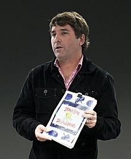

SpongeBob SquarePants is an American animated comedy television series created by marine science educator and animator Stephen Hillenburg for Nickelodeon. The series chronicles the adventures and endeavors of the title character and his aquatic friends in the fictional underwater city of Bikini Bottom. The fifth-longest-running American animated series, its popularity has made it a media franchise. It is the highest rated series to air on Nickelodeon and it is the most distributed property from ViacomCBS Networks International. The media franchise has generated more than $13 billion in merchandising revenue for Nickelodeon. Many of the series' ideas originated in The Intertidal Zone, an unpublished educational book that Hillenburg created in 1989 to teach his students about undersea life. He began developing SpongeBob SquarePants into a television series in 1996 following the cancellation of Rocko's Modern Life, and in 1997, a seven-minute pilot was pitched to Nickelodeon. He turned to Tom Kenny, who had worked with him on that series, to voice the title character. SpongeBob was originally going to be named SpongeBoy, and the series called SpongeBoy Ahoy!; both of these were changed as the name was already trademarked. Nickelodeon held a preview for the series in the United States on May 1, 1999, after it aired the 1999 Kids' Choice Awards. The series officially premiered on July 17, 1999. It has received worldwide critical acclaim since its premiere and had gained enormous popularity by its second season. A feature film, The SpongeBob SquarePants Movie, was released in theaters on November 19, 2004. A second film adaptation, The SpongeBob Movie: Sponge Out of Water, followed on February 6, 2015. A third film and prequel to the television series, The SpongeBob Movie: Sponge on the Run, was released in Canadian theaters on August 14, 2020 followed by a premiere on video-on-demand and CBS All Access in 2021. In 2018, the series began airing its twelfth season; it was renewed for a thirteenth season on July 17, 2019, which began airing in October 2020. As of July 30, 2020, all prior seasons of the show are available on CBS All Access. SpongeBob SquarePants has won a variety of awards including: six Annie Awards, eight Golden Reel Awards, four Emmy Awards, 17 Kids' Choice Awards, and two BAFTA Children's Awards. A Broadway musical based on the series opened in 2017 to critical acclaim. Three spin-off series, Kamp Koral: SpongeBob's Under Years, an untitled project based on the character Squidward Tentacles, and The Patrick Star Show, are in development as of 2020.
Few words about Stephen
Stephen McDannell Hillenburg(August 21, 1961 – November 26, 2018) was an American animator and marine science educator. He is best remembered for creating the Nickelodeon animated television series SpongeBob SquarePants. Hillenburg served as the showrunner for the first three seasons of the show, which has become the fifth-longest-running American animated series. Born in Lawton, Oklahoma and raised in Anaheim, California, Hillenburg became fascinated with the ocean as a child and developed an interest in art. He started his professional career in 1984, instructing marine biology, at the Orange County Marine Institute, where he wrote The Intertidal Zone, an informative picture book about tide-pool animals, which he used to educate his students. In 1989, two years after leaving teaching, Hillenburg enrolled at the California Institute of the Arts to pursue a career in animation. He was later offered a job on the Nickelodeon animated television series Rocko's Modern Life (1993–1996) after his success with The Green Beret and Wormholes (both 1992), short films that he made while studying animation. In 1994, Hillenburg began developing The Intertidal Zone characters and concepts for what became SpongeBob SquarePants. The show has aired continuously since its premiere in 1999. He also directed The SpongeBob SquarePants Movie (2004), which he originally intended to be the series finale. Hillenburg resigned as showrunner, but Nickelodeon continued to produce more episodes after he departed the series. He went back to making short films, with Hollywood Blvd., USA in 2013, but continued to be credited as an executive producer for SpongeBob SquarePants. Hillenburg co-wrote the story for the second film adaptation of the series, The SpongeBob Movie: Sponge Out of Water, which was released in 2015. Besides his two Emmy Awards and six Annie Awards for SpongeBob SquarePants, Hillenburg also received other recognition, such as an accolade from Heal the Bay for his efforts on elevating marine life awareness, and the Television Animation Award from the National Cartoonists Society. Hillenburg was diagnosed with amyotrophic lateral sclerosis (ALS) in 2017, but stated he would continue to work on SpongeBob SquarePants as long as possible. He died on November 26, 2018 at the age of 57.
link to a interview with the creators